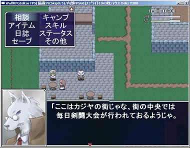

シルバーセカンド開発日誌
■
2007-06-02 (土) 千夜一夜開発中断▼
期待してくださっていた皆さまには
誠に申し訳ないご連絡なのですが、シルフェイド千夜一夜の
開発を一旦中断させていただくことになりました。
というのも、これまでちょくちょくと企画しつつ実験的に
少しシステム作りつつちょっとイベント作りつつ、と
やってきた千夜一夜ですが、本作には幻想譚のときのように、
今のところ自分が納得できるほどの
「これを作れば絶対面白いぞ！」と自信が持てる
ネタやシステム、シナリオ等の目玉がないため、
この調子で実際に作り始めると最後まで開発するモチベーションが
もたなくて挫折する可能性がかなり高いと判断したからです。 ▼追記を開く▼なので、だらだら作り始めて途中で開発が永久凍結するよりは、
今の内に一旦はっきりと「開発しない」宣言を
してしまった方がいいと考えました。
幸い、今のところ他の作品にも流用可能なシステム部分や
基本的なグラフィックしか開発していませんから、
費やした時間や作成した素材等は、
今後そのほぼ全てを再利用することができます。
（というか、実はクリフ迷宮録で使った分がその大半です）
よくよく考えれば、見切り発表自体が愚かだったと思います。
新作開発発表は、ある程度のプロトタイプを作った上で、
完成の見込みがあるとしっかり判断できてから、
発表するべきだったと反省しています。
ここまで大きいサイトでも、やっぱり企画倒れすることも
あるんだねとりあえずシル見7作れってことで、
どうかご勘弁下さい。
作りたい気持ちが弱い状態でモノを作るのはやっぱり困難ですし、
またそんなものを作ってもクオリティが下がることが明らかなので、
ヤバいと思ったら退くことは大切だと思います、とか言い訳！！
期待してくださっていた皆さんには本当にごめんなさい！
今後は完成を前提にした言い方はせずに、
「こんなプロトタイプ作品ＸＸを試しに作っていまーす」
という表現で皆さまにお伝えしようと思います。
実のところ、「完成させなきゃいけない作品がある」という状況が
意外と心の負担になっていることに最近気付きまして、
自発的なやる気を削いでいる雰囲気になっています。
どんなことも重荷に感じず、軽々と進んでいけるような
もっと強い心になりたいのですが、
どうも今すぐそうはなれないみたいなので、
今のところはそんな感じの扱いで書かせていただきます、
どうかご勘弁を！
ただシルフェイド千夜一夜は、
裏でこそこそ開発続行するかもしれなくて、
もし完成の見込みが経つほど開発が進んだならば、
また改めて発表させていただきたいと思っています。
だってほら！ゲーム雑誌とかでも開発度１０％なんかで
新作発表したりしないじゃないですか！？
普通せめて新作発表するにしても60％は欲しいと思うんですよ！？
（と思ったらこの前ファミ通で見たFF13が10%だった罠）今回は独り言。
研究とはたいてい、まずはテーマにしたい研究についての
過去の「参考文献」をいっぱい探して、それらの問題点を挙げたり
過去研究のアプローチについて考察し、
それに対して私たちはこういう観点で改良してみましたとか、
こういうアプローチで精度向上を試みましたといった感じの
提案をすることが主流です。
なぜなら過去と同じ研究をしても意味がないし、
全てを越えるには、まず過去研究の良いところを
可能な限り取り込む努力もしなければならないからです。
こういった手順で研究をしているとよく思うのですが、
ゲーム作るときにも実は同様のことが
言えるんじゃないかと、ときどき思います。
「参考ゲーム」って書いて、このゲームのこういう問題点を
解決しましただとかこういう部分の面白さを取り込みましただとか、
堂々と言って、良くしていっていいんじゃないかなぁ、とか。 ▼追記を開く▼ぶっちゃけシルフェイド幻想譚ってドラクエ1を極限まで
面白くしたらどうなるかというコンセプトで開発しておりまして、
元作品の片鱗は様々なところで見られると思います。
ドラクエ1はもの凄くシンプルですが、堀井雄二さんが
容量と戦いながら要らない部分をカットした果てにできた、
RPGのエッセンスを凝縮した作品だったので、
改造しやすいという部分も大きかったと思います。
ドラクエ1を初めて遊んだときに感じた素直な感想として、
「あの滅んでる街、早く行ったら助けられないかなあ」
「戦闘が攻撃して回復するだけで単純、主人公一人の
ゲームじゃ戦略性高い戦闘作れないのかな」
「お姫様早く助けに行っても遅くても言うことは一緒か！」
「装備は高価なほど強いし、全部装備可能だから分かりやすいや」
などがあり、以上の感想・不満をふまえて開発した結果が幻想譚です。
たぶんドラクエ1よりは面白いと思いますが色々パクリまくりです。
エンターテイメントの世界には、唯一絶対の参考書などありません、
前より面白さを上げていくには何をすればいいのかは、
従来作品に対して徹底的に考察を重ね、長所と問題点を理解した上で
取り込める物は取り込み、足りない物は
足していく必要があると思います。
もちろん、それは上っ面だけじゃなくて本質を突いて
吸収・追加していかねばならないので、とても難しいことです。
でもうまくいけば従来よりもっと濃密なゲームができあがります、
そうすりゃみんな幸せだしゲームも進歩していくしで
万々歳だと思うんですけれど、どうなんでしょ。
何はともあれ、全てを超えるためには全てを
利用しなければいけないというのは、間違いないと思います。
これから作ろうとしている物と似たようなゲームが過去にあったら、
それの問題点を考察した上で作ればもっと面白く作れるはず、
皆さんもっと昔の資産も利用しませんか！？
という何だか当たり前のそんな主張。
それはそうとどうやったら千夜一夜が一番面白く作れるか考え中で
過去のフリーシナリオRPGぽいゲームの情報を検索して
色々と調査してる状態です。
有名なSFCのRPGは昔結構遊んで来たのですが、
ロマサガ系はほとんど途中で飽きて挫折したので
何が悪いか分かりませんが自分的に何か問題があるんだと思ってます。
問題点が分かれば同じ失敗を犯さないよう努力できるので
できればハッキリさせたいところです。
何となくですが、千夜一夜の方は主人公いっぱいシステムよりは
主人公一人の方が深く作れるのかなあ、
などと考えがシフトしていたりして迷走中です。
ただどうなっても、最終的には自分から見て
一番面白そうなゲームを作りたいと思います！
じゃないと作る側としても面白くないですし！
■
2007-03-12 (月) ﾓﾊﾞｲﾙ作品進行中▼モバイル作品用にタクミさんに
作っていただいたMIDI曲を掲載！
いちおう二次利用は禁止です。
■レースのBGM(MIDI,33KB)
■レース会場のBGM(MIDI,20KB)
ただ、携帯で音楽オンにして聞く人ってなかなか
いなさそうなので（特に通学・通勤中に遊んでる方）、
せっかくいい物を作っていただいたのにちょっと
もったいないなあと思うところも。
いやそりゃ報酬はお渡ししますけれど、
創作ってやっぱお金だけではありませんし。
創作というのは、公開する範囲が広く、より多くの人に
作品を見てもらえる可能性が高ければ高いほど、
意欲が上がっていくものだと自分は思っています。
もちろん、その分責任も重くなりますから、
これはある程度慣れた人の感覚なのかもしれません。
何はともあれ、モバイル用作品をぱぱっと作って
PCゲームの開発に戻りたいと思います。 ■
2007-03-07 (水) 題材大事+ｼﾙ見絵▼
お仕事用スクショ貼るとアレなのでシル人物録マイア絵。
最近始めた、「プロットを書いてからそれに沿ってシナリオを書く」
という手順を行っていく上で、シナリオの文章を書いてるときに、
気持ちが「書くのが非常に億劫になるとき」と、
逆に、「もの凄い勢いで筆が走るとき」が
ハッキリ分かれることに気付きました。
億劫になるのは、プロット中で話がいまいち
話が盛り上がらない部分を書いてるときで、
凄い勢いになるのは面白い部分を書いているとき。
そりゃまあ、つまらない題材で書けって言われたら
当然つまらないわけで。
ゲーム開発は、途中で頓挫することが多いですけれど、
自分で絶対面白いと自信を持って言える企画や構想でないと
最後までモチベーションを維持できないだろうな、
という気持ちがあります。実は、作っている間よりも
作る前の方が重要という。
自分のモチベーションに繋がるほどの面白い構想で
作れれば、ユーザの人にもきっと楽しんでもらえるだろうし、
自分も開発過程が楽しくなるだろうし、そういった意味で
みんな幸せになれそうな気もします。
幻想譚のときは、
「一歩ごと時間経過して、時刻に応じて状況が変化するシステム
とか面倒で誰も作らんだろう」という自信があったので、
15ヶ月間、モチベーションが維持できましたが、
次も同じことだけをやるのはモチベーションが上がりません。
実はその辺のアピールポイントとなりそうな要素が
まだモヤモヤ状態なのが難だったりします、千夜一夜。
ゆっくり考える時間もできそうなので、しっかり考えたいと思います。■
2007-03-02 (金) 開発日誌を移転！▼
アルバートの恥ずかしい日誌
開発日誌を毎度HTMLで作るのは面倒なのと、
ユーザさんが過去の情報にアクセスするのが難しいという理由で
ブログに変更することにしました。
これなら検索したい内容があっても一発で調べられるので
ユーザさんにとっても楽なハズ！
例えば「千夜一夜」で検索すればそれに関する記事が
全部出るので、開発過程で何を考えて作ったかという
過去の記録も一目瞭然にできます（今はまだ何も出ないけど）
フィールド画面
3週間も間が空いてしまいました。
12月に入ったらますます追い込みの季節で忙しくなります。
ぼちぼちと時間を見つけては何か進めていますが、
肝心のゲーム部分にはなかなか手を付けられない状況です。
とりあえず、短い時間で疲れた頭でもできることと言えば
プログラムの細かい調整やシステムの実装・修正くらいですが
その点についてはひとまず前進しています。
遅めのPCでもまともに動作させるために
軽量化できそうなところは軽くしてみたり、
内輪的なことですがツールの使い勝手を上げたり、
30分単位ずつでいじれる部分はちょこちょこ改良中です。
今のところ、現ツールで作ったゲームの必須環境は
手元のノートパソコンのCPUがCeleronの800Mhz以上、
グラフィックボード無しでもOK、DirextX8か9以上対応、
という感じになりそうです。
この環境で、画面更新で20FPS、内部処理で60FPS出るので、
最低でもRPGツクールXPと同じかちょっと早い程度に
動くと思いますが、500Mhzくらいのパソコンで遊んでらっしゃる
方にはごめんなさいということになりそうです。
（ひょっとしたら気合いで動くかもしれませんが）■
2006-11-05 (日) 千夜一夜・開発中ムービー▼
youtubeなる動画をアップロードしほうだいのサイトが
あることが分かったので、戦闘の基礎部分だけ
撮影して載せてみました。
全自作プログラムですが、結構よく動いてると思います。
と自画自賛。
まだ色々と調整中だったり文字小さいとかと
システム的にほとんど練ってはいませんが、
シルフェイド見聞録の戦闘を
継承しているのは何となく分かると思います。
でも敵のAIがほとんど何もできてなかったり、
攻撃エフェクトができてなかったり
目に見える部分も見えない部分もまだまだです。
この点についてはぼちぼちと開発続行しています。■
2006-10-29 (日) 千夜一夜微妙に進行再開！▼
主人公ヘレン。
ナギナタ的な感じに槍を振り回しているイメージ。
戦闘の基礎部分は完成したので、
成長要素などについてもぼちぼち検討中です。
幻想譚でいうところのS.EXPによる強化などは
開発の最後の最後（ラスト1ヶ月くらい？）で
何となくポイっと入れたものだったりするのですが、
アレのおかげで2周目の面白さやプレイスタイルの自由度が
大幅アップしたと思うので、面白さアップに繋がる要素を
吟味しながら入れていきたいと思います。
とりあえず、S.EXPみたいなポイントで特殊能力を取得したり、
2周目に極端なパワーアップできたりするのは
単純で理解しやすく面白い要素なので、
基本的には入れる予定でいます。
街ごとに装備買って交換するのは面倒だと思う派なんですが、
戦えば勝手に溜まるポイントで適当に特殊能力取っていけば
とにかく強くなるっていうのは個人的に大好きです。
「次の次の街でもっと強い武器売られてるなら別に今
買わなくてもいいじゃん！買わずにお金貯めとくよ！」
サーショの街で装備が全部売ってるのはそんな主張。■
2006-10-08 (日) 千夜一夜停滞気味▼
新キャラもぼちぼちと。
ウリユの子孫予定キャラとかおっちゃんとか。
ちなみに、千夜一夜ではシイルの未来の街が登場予定です。
色々と幻想譚の話が昔話のように語られる予定。
リアル事情（研究）が佳境に入ってきて色々とエラい状況に
なっております。
何とかして時間を絞り出したいと思いつつ
帰ると毎日ヘロヘロで、果たしていい仕事ができてるのか
疑問が湧いてきています、とほほ。
あと3ヶ月経てば色々と終わりが来るので、それが終わるまでは
ちょっと更新がおぼつかなると思います、
皆さんには新作をお待たせして申し訳ないのですが、
どうか楽しみに待っていてくださると幸いです。
街の設定、なるべく街ごとにしっかりとした性格付けができると
面白いのですが、なかなか難しい。
とりあえず、幻想譚と同じく鍛冶と剣の街は用意。
武器は戦闘システムと深い関わりがあるので、
意味としては重要です。
他にも名産物があるだとか、スゴいものが封印されてるとか
その城の王様が傍若無人だとか色々あるとは思いますが、
それがシステムや物語に深く絡んでくればくるほど
面白くなるので、そういうのを考えたいなあと思いつつ、
なかなか思いつかないそんな現状。
それ以前に、リアルでやらなければいけないことが
どんどん山積みになってきていてちょっと大変な状況です。
何とか集中して、短い時間をうまく活用しつつ製作に
勤しみたいと思います。
でも睡眠はしっかりとりたいと思う今日この頃。
毎日眠いです、とほほ。
Copyright © SmokingWOLF / Silver Second
 カテゴリ: 開発日誌
カテゴリ: 開発日誌 カテゴリ: 開発日誌
カテゴリ: 開発日誌